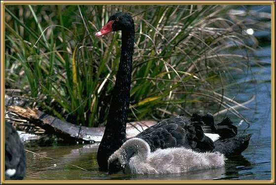

The emblem of Western
Australia, it is found through most areas of Australia. Most lakes and inlets have their
own population of black swans. The young are called cygnets and are soft, fluffy and grey.
The parent birds are very defensive of them. They are a very beautiful bird, but will
attack people.
112-140cm (44-55 inches)
Photographer: J fields